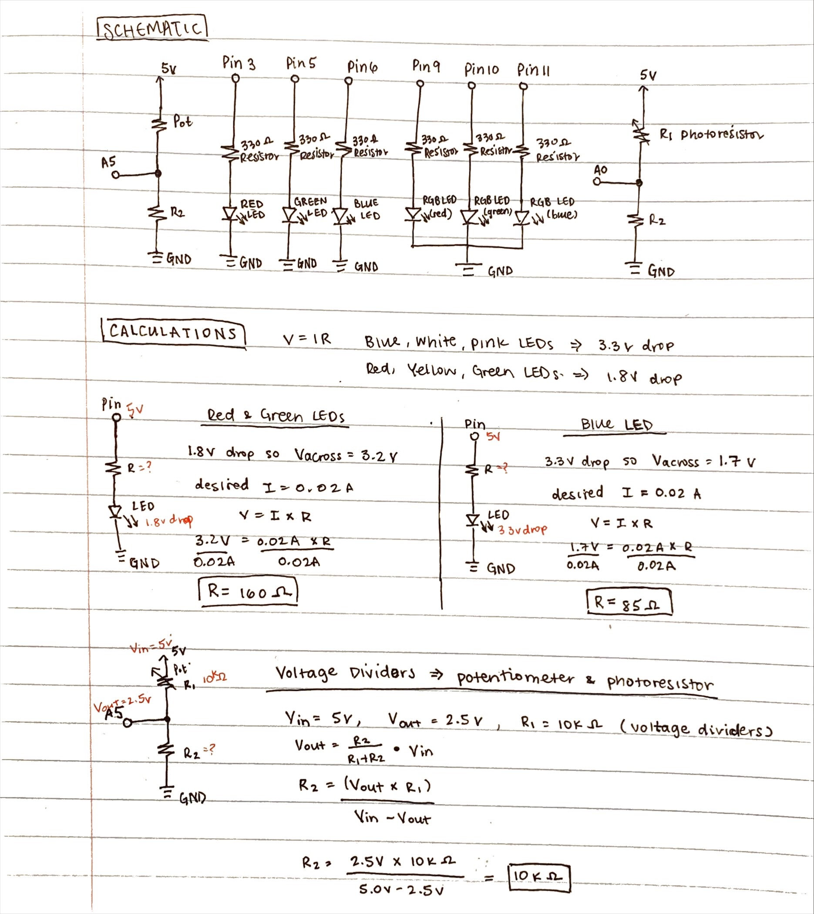
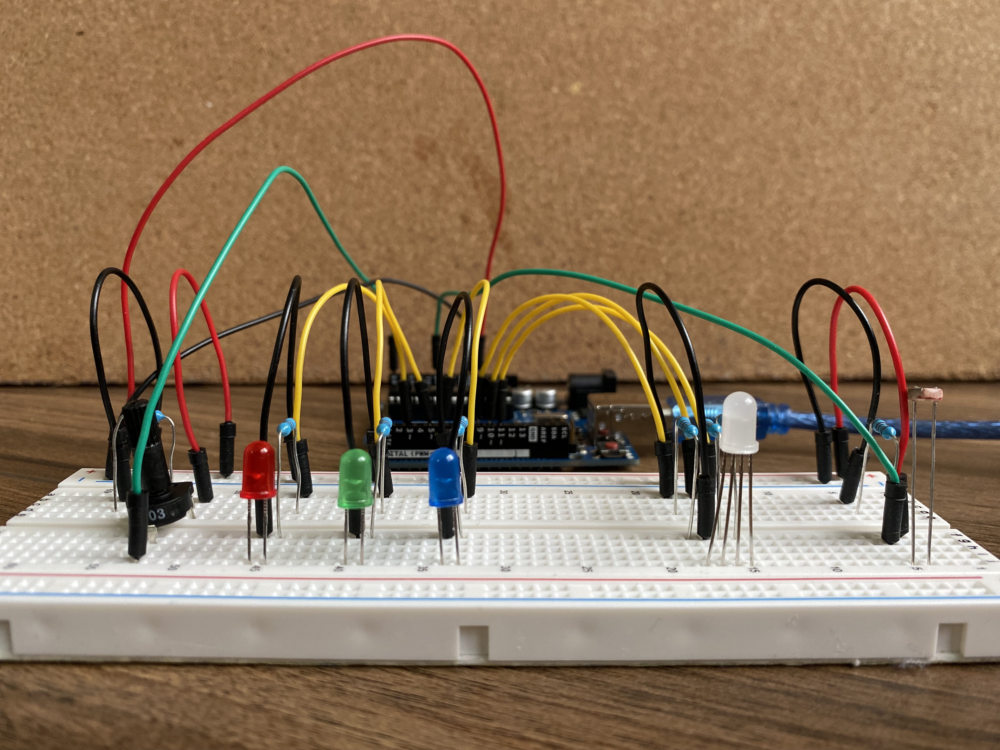

create a schematic for a circuit containing a sensor (ex: either a photoresistor or a thermistor) in a voltage divider to change the state of an output device
implement this circuit using a breadboard
write firmware in Arduino, writing a message to the serial port
the code must use:
analogRead()
analogWrite()
map function
if-statement
Here is a gif of my LED color selector circuit in action!
Building off of the LED color selector circuit I had created for A2, I decided to create a mood-centered LED color selector circuit 🔴 🟢 🔵 in conjunction
with a light sensor ☀ by using red, green, blue, and RGB LEDs, as well as a photoresistor and potentiometer. Users can select a LED color based on their mood, and a corresponding message
will be printed out when the LED color is changed.
Schematic
 Schematic and calculations
for my circuit.
Since I was using red, green, and blue LEDs for my circuit, I did two sets of calculations to determine what the appropriate
resistance to use for each LED: one for the red and green LEDs, and another set of calculations for the blue LED. For red, yellow,
and green LEDs, they all have 1.8V voltage drop, and for blue, pink, and white LEDs, they all have 3.3 voltage drop. The
desired current for all the LEDs I used was 20mA, or 0.02A (found based on the datasheets for the LEDs). When calculating the
appropriate resistance to be used in the circuit, I started with calculating the voltage across. For each of the LEDs, I decided to use 330
Ω resistors to be consistent.
Red and Green LEDs:
Knowing that the Arduino gives 5V, I calculated the voltage across as 3.2V (5V - 1.8V drop = 3.2V across). Using the known voltage across and
the desired current, I then used Ohm's Law with the equation V=IR to get a value R=160Ω for resistance. To ensure
that I did not overload the LEDs and cause them to burn out, I decided to round up and use a 330Ω resistor (shown in schematic
above calculations).
-- Blue LED: Knowing that the Arduino gives 5V, I calculated the voltage across as 1.7V
(5V - 3.3V drop = 1.7V across). Using the known voltage across and the desired current, I then used Ohm's Law with the equation
V=IR to get a value R=90Ω for resistance. To decrease the brightness of the LED, I decided to round up and use a
330Ω resistor (shown in schematic above calculations).
-- RGB LED: For the RGB LED, I used the calculations
above for each corresponding color (red, green, and blue) for the LED. I decided to use a 330Ω resistor for all three for
consistency with the other LEDs.
-- Photoresistor and Potentiometer (Voltage Dividers) For the photoresistor and potentiometer, I decided to use a 10kΩ resistor.
Using the multimeter, I had measured a reading of 10kΩ resistance when the potentiometer knob was turned to the very right. I also used the multimeter
to read the voltage of the potentiometer, which I found to have a range of 2.5V-5V. Using these values, I used the equation R2 =(Vout*R1)/(Vin-Vout)
to get a value of 10kΩ. For the photoresistor, I exposed the photoresistor to different intensity brightness to measure resistance. The measured
resistance I got from the multimeter was a range of around 1k-10kΩ, and I found that resistance decreased as brightness intensity increased. I found that when
the multimeter measured around 10kΩ resistance, I measured 2.5V, and 5V when the photoresistor was exposed to really intense luminosity. For calculating R2, I
used the same calculations as I did for the potentiometer of Vin=5V, Vout=2.5V, R1=10kΩ, and I calculated R2 to be 10kΩ.
Circuit
For my circuit, to make the LED color chooser circuit, I used a red LED, green LED, blue LED, a RGB LED, potentiometer, and photoresistor.
Top View of my Circuit
 Side View of my Circuit
Arduino Code
/// SET PINS FOR LEDs and VOLTAGE DIVIDERS ///// pins for red, green, and blue LEDs (red = pin3, green = pin5, blue = pin6)const int leds_pins[] = {3, 5, 6};
// pins for the RGB LEDconst int rgb_led_pin[] = {9, 10, 11};
// number of total leds that a user can choose a color from (red, green, or blue)const int num_leds = 3;
// pin used for "sensor" using the photoresistor (will be used for rgb LED)int rgb_sensor_pin = A0;
// pin used for potentiometer (will be used to choose color of red, green, blue LEDS)int choose_color_pin = A5;
/// SETUP FUNCTION ///// the setup function runs once when you press reset or power the boardvoidsetup() {
// initialize serial communication at 9600 bits per second:Serial.begin(9600);
// initialize pins for the RGB LED as an outputfor (int i = 0; i < num_leds; i++) {
// pins for red, green, and blue LEDspinMode(leds_pins[i], OUTPUT);
// pins for RGB LEDpinMode(rgb_led_pin[i], OUTPUT);
}
}
// PRINT BRIGHTNESS STATUS MESSAGE FUNCTION //// function to print out brightness status based on the analog in value from the photoresistor// Parameter:// - int sensor_value: the analog in value read in from the photoresistorvoid rgbPrint(int sensor_value) {
// print statements to serial monitor based on current brightness value// bright -> sensor value is at least 450// semi-bright -> sensor value is at least 220 and less than 450// dark -> sensor value is less than 220if (sensor_value >= 450) {
// print message that it is bright outsideSerial.println("Quite bright outside!");
} else if (sensor_value < 450 & sensor_value >=220) {
// print message that it is getting darkerSerial.println("Getting kinda dark :/");
} else { // sensor_value < 220// print message that it is too darkSerial.println("Too dark outside. Shine bright like a diamond! Time to turn the lights brighter!");
}
}
/// SET RGB LED COLOR & BRIGHTNESS FUNCTION ///// function to set the color and brightness of the RGB LED based on the value read in from the photoresistor// Parameters:// - int rgb_in: the analog in value read in from the photoresistor// - int rgb_out: the analog out value to write to the RGB LED// - int led_num: 0, 1, or 2 (corresponding to red, green, and blue of the RGB LED)void rgbSet(int rgb_in, int rgb_out, int led_num) {
// if the analog in value is above 650, set the starting color of the RGB LED// else, set the brightness and color accordinglly using the given led_num and rgb_out valuesif (rgb_in > 650) {
// set the starting color of the RGB LED, with red, green, and blue each at 10for (int i = 0; i < num_leds; i++) {
analogWrite(rgb_led_pin[i], 10);
}
} else { // rgb_in < 650// set the given color of the RGB LED to the given output valueanalogWrite(rgb_led_pin[led_num], rgb_out);
}
}
/// LOOP FUNCTION ///// the loop function runs over and over again forevervoidloop() {
// read the analog in value of the photoresistor:int rgb_sensor_value = analogRead(rgb_sensor_pin);
// map the rgb_sensor_value to the range of the analog out to calibrate// read in a range 100 - 750// write out a range 255 - 0 (for the LED)int rgb_output_value = map(rgb_sensor_value, 100, 750, 255, 0);
// constrain the rgb sensor output to be only from 0 to 255
rgb_output_value = constrain(rgb_output_value, 0, 255);
// read the analog in value of the potentiometer to choose a LED colorint choose_sensor_value = analogRead(choose_color_pin);
// print message based on the value read in from the photoresistor
rgbPrint(rgb_sensor_value);
// turn on a LED based on the analog in value read in from the potentiometer // red LED -> 512 - 680// green LED -> 681 - 850// blue LED -> 851 - 1023if (choose_sensor_value <= 680) {
// print message that the light is redSerial.println("~~ red as a rose ~~");
// turn on red led (set value to 255)analogWrite(leds_pins[0], 255);
// turn off green led (set value to 0)analogWrite(leds_pins[1], 0);
// turn off blue led (set value to 0)analogWrite(leds_pins[2], 0);
// set red in RGB LED to the output value
rgbSet(rgb_sensor_value, rgb_output_value, 0);
} else if (choose_sensor_value > 680 & choose_sensor_value <= 850) {
// print message that the light is greenSerial.println("~~ green with envy ~~");
// turn off red led (set value to 0)analogWrite(leds_pins[0], 0);
// turn on green led (set value to 255)analogWrite(leds_pins[1], 255);
// turn off blue led (set value to 0)analogWrite(leds_pins[2], 0);
// set green in RGB LED to the output value
rgbSet(rgb_sensor_value, rgb_output_value, 1);
} else { // chooseSensorValue > 850
// print message that the light is blueSerial.println("~~ feeling the blues ~~");
// turn off red led (set value to 0)analogWrite(leds_pins[0], 0);
// turn off green led (set value to 0)analogWrite(leds_pins[1], 0);
// turn on blue led (set value to 255)analogWrite(leds_pins[2], 255);
// set blue in RGB LED to the output value
rgbSet(rgb_sensor_value, rgb_output_value, 2);
}
}
Above is a code snippet of my Arduino code. For my code, I initialized the pins as OUTPUTs with their corresponding colors, with Pin3 for the Red LED, Pin5
for the Green LED, and Pin6 for the Blue LED using an array [] and for-loop. For the RGB LED, I set them to pins 9-11 and intialized them as OUTPUTs. I used
analogRead() to read in the analog in values from the potentiometer (which I connected to the analog pin A5) and photoresistor (connected to analog pin A0).
From the analog in values that were read in, I used the map function and constrain() to calibrate the values that were read in to map it to the range of the
analog out to write to the LED for output (range of values 0 to 255 for the LEDs). I wanted to increase the brightness of the RGB LED when the photoresistor
input value decreased (light intensity brightness decreased aka less bright). I used the if-statement to increase the LED brightness using analogWrite()
when the photoresistor input sensor value detected less light (I chose to use 650 as the threshold value).
View the arduino code
here!
Serial Monitor Example Output
Quite bright outside!
~~ feeling the blues ~~
Quite bright outside!
~~ feeling the blues ~~
Quite bright outside!
~~ green with envy ~~
Quite bright outside!
~~ red as a rose ~~
Getting kinda dark :/
~~ red as a rose ~~
Getting kinda dark :/
~~ red as a rose ~~
Too dark outside. Shine bright like a diamond! Time to turn the lights brighter!
Video of the choosing the LED color by twisting the knob of the potentiometer, and changing the brightness of the RGB LED to the chosen color using the photoresistor.